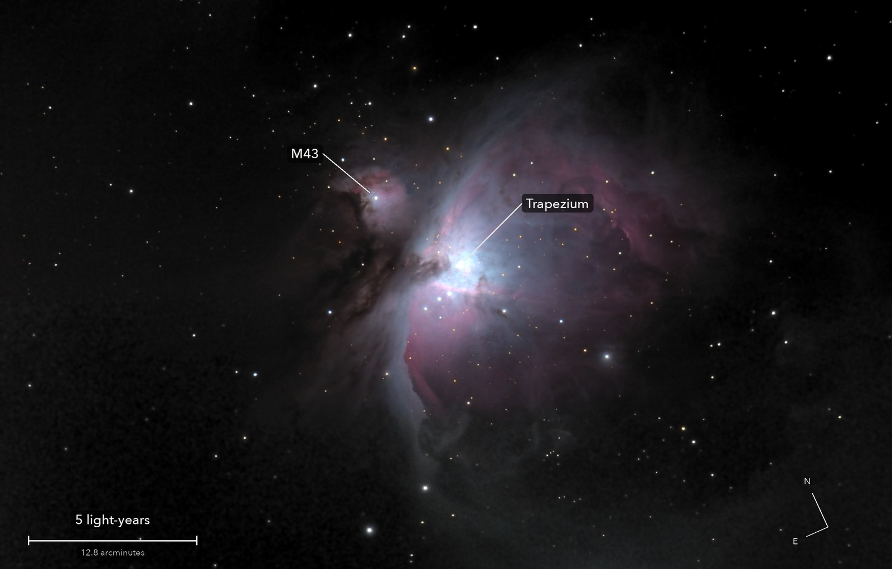
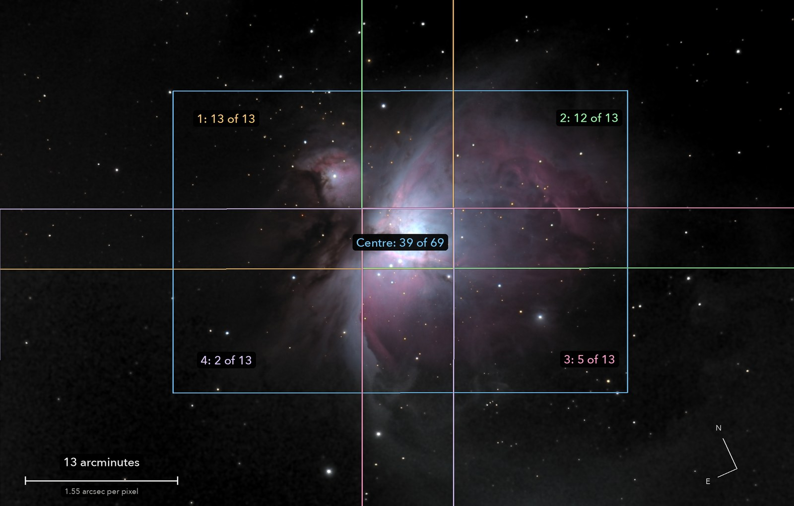

The Orion Nebula, wide
Messier 42 and Messier 43
Five overlapping fields joined into one, to take in the faint outer loops of gas round the bright heart of the nebula.
What you are looking at

Swipe sideways to see the rest. Tap the picture for full size.
- Distance
- 1,344 light-years
- This picture spans
- 27 light-years
- The light left
- Around the year 680
- What it is
- The nearest great nursery of new stars
For photographers
A 2 x 2 mosaic round the deep centre field; each outline is one sensor frame, with frames kept of frames taken.

Swipe sideways to see the rest. Tap the picture for full size.
- Exposures
- 20 s at ISO 3200 throughout; 2 s at ISO 800 for the core
- Frames
- Centre 39 of 69. Panels 13, 12, 5 and 2 of 13 each: the last two were shot under cloud and are shown in grey
- Mosaic
- Each panel centred by plate solve, then placed by its own plate solution; scaled on shared stars; matched to the centre with a constant and a plane; feathered
- Sampling
- 1.552 arcsec per pixel (2 x 2 mean of the working grid). Stars 4.4 to 5 arcsec wide
- Field
- 67.9 x 43.4 arcmin, cropped level from the mosaic; one frame is 38.8 x 25.9
- When
- 4 October 2026, before dawn. 41 to 46 degrees up, Moon up, thin cloud passing
- Calibration
- Flat from 26 twilight-sky frames, large-scale shape from cloud-lit frames. No darks
- Stacking
- RAW colour planes (no demosaic), hot pixels by 3 x 3 median, registered on stars with rotation, sigma-clipped mean
- Finish
- Black 34 and white 199 of 255, S-curve 0.3. Saturation x 1.5. Dark sky made neutral and smoothed (bilateral, 3 px)
- Telescope
- Celestron 8SE Schmidt-Cassegrain with dew shield: 203 mm aperture, 2,084 mm focal length (measured by plate solve), f/10.3
- Camera
- Sony a6000, stock, at prime focus: APS-C 23.5 x 15.6 mm, 6000 x 4000, 3.9 micron pixels, RAW
- Mount
- Sky-Watcher EQ6-R, unguided. Set down 27 degrees off the pole; both axes driven from a pointing model fitted to plate solves. Residual drift about 0.1 arcsec per second
© 2026 Brad Gessler · Celestron 8SE (8 inch, 2,080 mm) and Sony a6000 on an EQ6-R · San Francisco Bay Area · 4 October 2026
Capture and mount: Observatory (Elixir on a Raspberry Pi 3). Stacking: numpy, OpenCV, rawpy. Plate solving: astrometry.net. Stacked from the camera's RAW frames. Nothing generated.
© 2026 Brad Gessler. The pictures and the words are his own; all rights reserved.